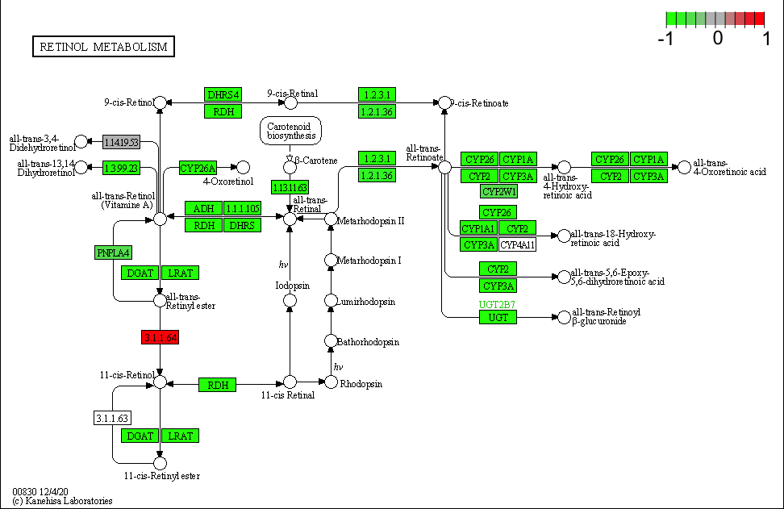
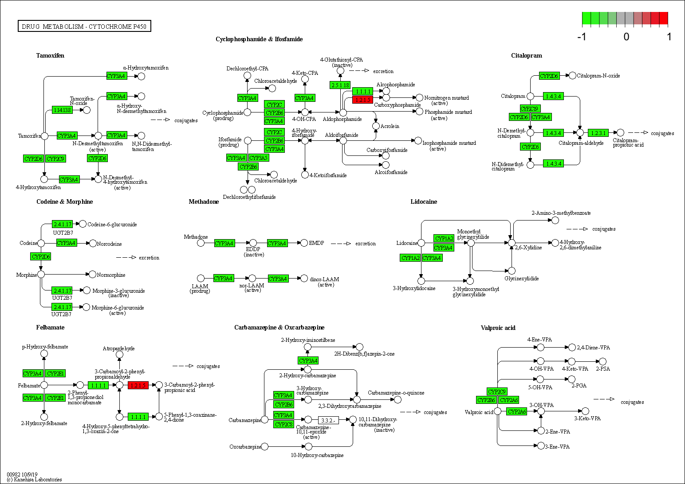
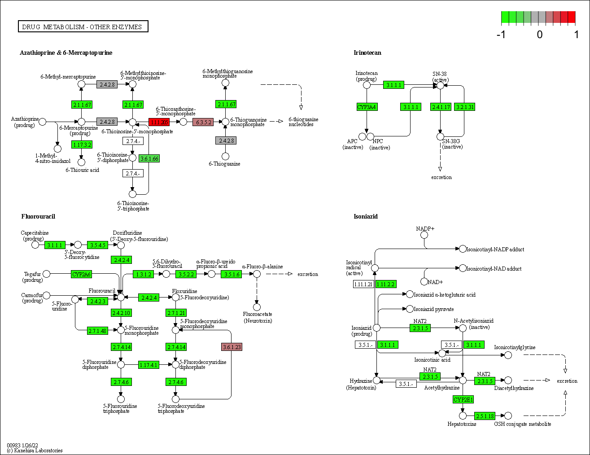
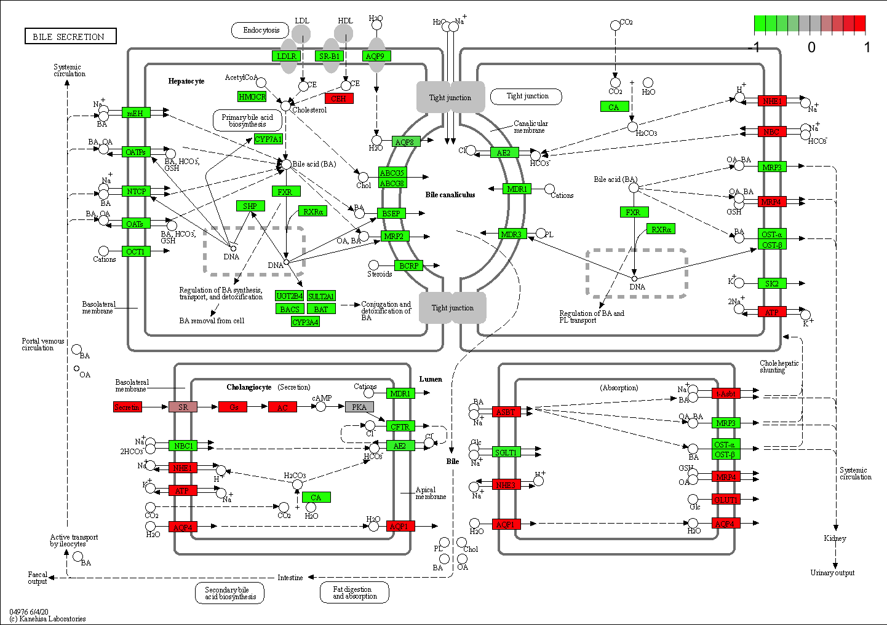

knitr::opts_chunk$set(echo = FALSE) # set default chunk option to not print the code that generated that output
library(usethis)
library(readr) # for reading and writing csvs
library(fs) # for filesystem navigation in R
library(dplyr) # for dataframe manipulation
library(tidyr) # for dataframe group nesting and manipulation
library(purrr) # for functional programming, including on nested dataframes
library(readxl) # for reading excel files
library(stringr) # for efficient string manipulation
library(magrittr) # for enhanced pipes
library(broom) # for model manipulation
library(forcats) # for factor manipulation
library(ggplot2) # for additional plotting features
library(ensembldb)
library(DESeq2)
library(AnnotationDbi)
library(org.Hs.eg.db)
library(gage)
library(pathview)
library(gageData)
library(TFEA.ChIP) # analyze transcription factor enrichment in a gene set
library(BiocParallel) # speed up some parallelizeable processing
register(MulticoreParam(4)) # set core parallelization to 4 CPU cores
theme_set(theme_bw()) # set the default ggplot theme to be clear & cartooneyGTEX RNA-seq Liver-specific Process and TF Identification
Introduction
I use the publicly available bulk RNA-Seq data from GTEX (v8) identify biological pathways and processes specific to the liver. I also identify putative transcriptional regulators of these pathways and processes. To ensure that the analysis fits into local memory, I restrict the features in scope to be protein-coding genes, and the tissues in scope to be the following following: heart, kidney, liver, lung, muscle, pancreas, spleen, stomach, pituitary gland, and thyroid.
Notes on approach
The GTEx Consortium atlas of genetic regulatory effects across human tissues The Genotype-Tissue Expression (GTEx) project was established to characterize genetic effects on the transcriptome across human tissues and to link these regulatory mechanisms to trait and disease associations.
I’m interpreting “specific to the liver” to mean uniquely expressed in the liver compared to each other tissue in scope. I will express this in the analysis by running instructing DEseq to run a one-to-many test by ranking liver first among the tissue factors, and thenrunning a p-value metaanalysis on the p-value results for features (protein-coding genes) in all comparisons. (Meaning, it only takes one liver-to-tissue comparison revealing that a gene is NOT up-regulated in the liver to remove that gene from consideration.)
Patrick’s hypothesis
Given this is liver RNA-seq, I expect to see genes implicated in the liver main roles, namely:
- conditioning the blood by secreting important proteins into it, like serum albumin, immune complement proteins, C-reactive protein, clotting factors (pre-pro-thrombin, fibrinogen, plasminogen), etc.
- cytochrome P450 proteins (CYPxxx), by which the liver catabolizes xenobiotics
- glycolysis, gluconeogenesis, and fatty acid catabolism
- bile salts catabolism and anabolism (cholesterols, hemoglobin/porphyrin)
- amino acid conversion and catabolism
Metadata (sample annotations)
Samples come from https://github.com/broadinstitute/gtex-v8/blob/master/data/GTEx_Analysis_v8_RNAseq_samples.txt, and have to be manually downloaded.
tissue_id n
1 Muscle_Skeletal 803
2 Whole_Blood 755
3 Skin_Sun_Exposed_Lower_leg 701
4 Adipose_Subcutaneous 663
5 Artery_Tibial 663
6 Thyroid 653
7 Nerve_Tibial 619
8 Skin_Not_Sun_Exposed_Suprapubic 604
9 Lung 578
10 Esophagus_Mucosa 555
11 Adipose_Visceral_Omentum 541
12 Esophagus_Muscularis 515
13 Cells_Cultured_fibroblasts 504
14 Breast_Mammary_Tissue 459
15 Artery_Aorta 432
16 Heart_Left_Ventricle 432
17 Heart_Atrial_Appendage 429
18 Colon_Transverse 406
19 Esophagus_Gastroesophageal_Junction 375
20 Colon_Sigmoid 373
21 Testis 361
22 Stomach 359
23 Pancreas 328
24 Pituitary 283
25 Adrenal_Gland 258
26 Brain_Cortex 255
27 Brain_Caudate_basal_ganglia 246
28 Brain_Nucleus_accumbens_basal_ganglia 246
29 Prostate 245
30 Brain_Cerebellum 241
31 Spleen 241
32 Artery_Coronary 240
33 Liver 226
34 Brain_Cerebellar_Hemisphere 215
35 Brain_Frontal_Cortex_BA9 209
36 Brain_Putamen_basal_ganglia 205
37 Brain_Hypothalamus 202
38 Brain_Hippocampus 197
39 Small_Intestine_Terminal_Ileum 187
40 Ovary 180
41 Brain_Anterior_cingulate_cortex_BA24 176
42 Cells_EBV-transformed_lymphocytes 174
43 Minor_Salivary_Gland 162
44 Brain_Spinal_cord_cervical_c-1 159
45 Vagina 156
46 Brain_Amygdala 152
47 Uterus 142
48 Brain_Substantia_nigra 139
49 Kidney_Cortex 85
50 Bladder 21
51 Cervix_Endocervix 10
52 Cervix_Ectocervix 9
53 Fallopian_Tube 9
54 Kidney_Medulla 4Put liver first in this list, because after filtering, I will use it to set the order of the factors.
Double-check I got all the names right
[1] TRUEGot ’em!
Filter sample table to our scoped tissue types
n
1 44214421 / 17382 = .254 . We are keeping ~ 25% of samples that were in GTEx v8.
tissue_id n percent
1 Muscle_Skeletal 803 18.00
2 Thyroid 653 15.00
3 Lung 578 13.00
4 Heart_Left_Ventricle 432 9.80
5 Heart_Atrial_Appendage 429 9.70
6 Stomach 359 8.10
7 Pancreas 328 7.40
8 Pituitary 283 6.40
9 Spleen 241 5.50
10 Liver 226 5.10
11 Kidney_Cortex 85 1.90
12 Kidney_Medulla 4 0.09Filter features to protein-coding genes
please restrict your analyses to protein-coding genes and the following tissues:
[1] "ACCNUM" "ALIAS" "ENSEMBL" "ENSEMBLPROT" "ENSEMBLTRANS"
[6] "ENTREZID" "ENZYME" "EVIDENCE" "EVIDENCEALL" "GENENAME"
[11] "GENETYPE" "GO" "GOALL" "IPI" "MAP"
[16] "OMIM" "ONTOLOGY" "ONTOLOGYALL" "PATH" "PFAM"
[21] "PMID" "PROSITE" "REFSEQ" "SYMBOL" "UCSCKG"
[26] "UNIPROT" 'select()' returned 1:many mapping between keys and columns# A tibble: 10 × 2
genetype n
<chr> <int>
1 <NA> 21144
2 protein-coding 19198
3 pseudo 8918
4 ncRNA 5820
5 snoRNA 654
6 other 368
7 snRNA 75
8 rRNA 20
9 scRNA 2
10 unknown 1Actually apply the filter below
[1] 19198 4421Number of features
[1] 5620019184/56200 = 34%, so we are keeping 34% of features in the counts matrix, because ENSEMBL annotates them as protein-coding. Thus we are jettisoning 66% of features as being non-protein coding. What the ENCODE db indicates is that annotated ENCODE entries are the most common, followed by pseudo, ncRNA, snoRNA, “other,” snRNA, rRNA, scRNA, and “unknown.”
Run DEseq2 analysis
Prepare data object for DEseq2
class: DESeqDataSet
dim: 19198 4421
metadata(1): version
assays(1): counts
rownames(19198): ENSG00000186092.4 ENSG00000187634.11 ...
ENSG00000198695.2 ENSG00000198727.2
rowData names(0):
colnames(4421): GTEX.1117F.0426.SM.5EGHI GTEX.1117F.0726.SM.5GIEN ...
GTEX.ZZPU.1426.SM.5GZZ6 GTEX.ZZPU.2626.SM.5E45Y
colData names(4): sample_id donor_id has_genotype tissue_idFilter for minimum counts
Filter for features (genes) where there are less than 113 or more samples with normalized counts greater than or equal to 5. (113 is half the number of liver samples in the data, allowing for at least some dispersion in at least among the samples of the tissue type we want to understand.)
[1] 18023 4421[1] 22813[1] 0.4059253[1] 0.06104045Originally, when filtering for features with a minimum number of counts over the minimum number of genes, I filtered out 22,813 (40.6%) based on low counts / coverage. However, now the I’m filtering genes for counts after filtering for protein coding genes, only 6.1% of features are dropped. This difference in proportionality indicates that low count features and protein coding genes are not necessarily independent. In fact, the non-protein-coding features were enriched for low expression levels across many of the samples.
Run DEseq2 analysis
using pre-existing size factorsestimating dispersionsgene-wise dispersion estimatesmean-dispersion relationshipfinal dispersion estimatesfitting model and testing-- replacing outliers and refitting for 237 genes
-- DESeq argument 'minReplicatesForReplace' = 7
-- original counts are preserved in counts(dds)estimating dispersionsfitting model and testing [1] "tissue_id_Heart_Left_Ventricle_vs_Liver"
[2] "tissue_id_Heart_Atrial_Appendage_vs_Liver"
[3] "tissue_id_Kidney_Cortex_vs_Liver"
[4] "tissue_id_Kidney_Medulla_vs_Liver"
[5] "tissue_id_Lung_vs_Liver"
[6] "tissue_id_Muscle_Skeletal_vs_Liver"
[7] "tissue_id_Pancreas_vs_Liver"
[8] "tissue_id_Spleen_vs_Liver"
[9] "tissue_id_Stomach_vs_Liver"
[10] "tissue_id_Pituitary_vs_Liver"
[11] "tissue_id_Thyroid_vs_Liver" Extract all contrast data from DEseq
contrast n
1 Heart_Atrial_Appendage_vs_Liver 18023
2 Heart_Left_Ventricle_vs_Liver 18023
3 Kidney_Cortex_vs_Liver 18023
4 Kidney_Medulla_vs_Liver 18023
5 Lung_vs_Liver 18023
6 Muscle_Skeletal_vs_Liver 18023
7 Pancreas_vs_Liver 18023
8 Pituitary_vs_Liver 18023
9 Spleen_vs_Liver 18023
10 Stomach_vs_Liver 18023
11 Thyroid_vs_Liver 18023Prepare data with additional annotations
Check if ENSG string manipulation prodcuces unique values
# A tibble: 1 × 2
n nn
<int> <int>
1 1 198253# A tibble: 1 × 2
n nn
<int> <int>
1 1 198253'select()' returned 1:many mapping between keys and columns
'select()' returned 1:many mapping between keys and columns
'select()' returned 1:many mapping between keys and columnsFurther explore the contrasts
# A tibble: 110 × 4
# Groups: contrast [11]
contrast symbol name log2FoldChange
<chr> <chr> <chr> <dbl>
1 Heart_Atrial_Appendage_vs_Liver SLC27A5 solute carrier family… 7.77
2 Heart_Atrial_Appendage_vs_Liver RDH16 retinol dehydrogenase… 9.76
3 Heart_Atrial_Appendage_vs_Liver SLC22A1 solute carrier family… 11.8
4 Heart_Atrial_Appendage_vs_Liver CYP2E1 cytochrome P450 famil… 11.5
5 Heart_Atrial_Appendage_vs_Liver ASGR1 asialoglycoprotein re… 10.1
6 Heart_Atrial_Appendage_vs_Liver CYP2D6 cytochrome P450 famil… 8.74
7 Heart_Atrial_Appendage_vs_Liver CPS1 carbamoyl-phosphate s… 8.98
8 Heart_Atrial_Appendage_vs_Liver APOM apolipoprotein M 7.20
9 Heart_Atrial_Appendage_vs_Liver ATF5 activating transcript… 7.22
10 Heart_Atrial_Appendage_vs_Liver MST1 macrophage stimulatin… 7.25
# ℹ 100 more rowsThis is looking promising. When sorted by statistic and the top ten genes are displayed from each tissue, there are many common genes that are relatively up-regulated (in mRNA expression) in liver compared to each of the other tissues. SLC27A5 is very commonly (and very strongly) up-regulated in liver; RDH16 and CPS1 are as well.
MA Plot (analysis QC)
For all contrasts, the data points (gene IDs) are roughly symmetric around the x-axis (indicating no systematic bias), and the majority are close to the x-axis, indicating many genes are not differentially expressed.
# A tibble: 11 × 4
contrast `mean log2FoldChange` `S.D. log2FoldChange` `n features`
<chr> <dbl> <dbl> <int>
1 Heart_Atrial_Append… -0.0807 2.49 18023
2 Heart_Left_Ventricl… -0.160 2.53 18023
3 Kidney_Cortex_vs_Li… 0.120 2.10 18023
4 Kidney_Medulla_vs_L… -0.0501 2.29 18023
5 Lung_vs_Liver 0.134 2.37 18023
6 Muscle_Skeletal_vs_… -0.342 2.77 18023
7 Pancreas_vs_Liver -0.0455 2.21 18023
8 Pituitary_vs_Liver 0.229 2.69 18023
9 Spleen_vs_Liver -0.156 2.36 18023
10 Stomach_vs_Liver 0.112 2.27 18023
11 Thyroid_vs_Liver -0.0922 2.37 18023As a clearer summary plot, the histograms for each contrast a preponderance of genes are close to the 0 on the x-axis, indicating many features have limited fold change between samples.
While the test statistic outputted by DEseq2 is less “clipped” to zero than the p-values (many of which exhaust the range and get reported as 0.000000e+00), the statistic range/distribution is not the same for all contrasts, notably for the Kidney Medulla vs Liver comparison. This can be explained from the Filter sample table to our scoped tissue types section of this document, which shows the Kidney Medulla GTEx tissue set as having far fewer samples (n = 4) than the other tissue types (mean = 368, sd = 230).
As long as we group_by() when ranking, sorting, and otherwise comparing (in long format), this should be okay. Once pivoted into wide format, this can present a problem because not every column of values will be able to react similarly to the same ranking, sorting, or cut-offs.
Cross-contrast analysis
Summarize by feature
Which is effectively a wide format, appropriate for joining. (Grouped-by calculations in the same column run more efficiently and are easier to program than row-wise multi-column calculations.
Warning: There were 4798 warnings in `summarize()`.
The first warning was:
ℹ In argument: `across(...)`.
ℹ In group 7: `ENSG = "ENSG00000188290.10"`, `short_ensg = "ENSG00000188290"`,
`symbol = "HES4"`, `entrez = "57801"`, `name = "hes family bHLH transcription
factor 4"`.
Caused by warning in `min()`:
! no non-missing arguments to min; returning Inf
ℹ Run `dplyr::last_dplyr_warnings()` to see the 4797 remaining warnings.To explain why I’m contriving these summary statistics, I have to first acknowledge that downstream processing (GO analysis, TF.ChIP) expects continuous data ( e.g. log2FoldChange, adj.p.val) for both the up-regulated and down-regulated features. Thus, in drawing conclusions from the comparisons, I am balancing maintaining continuous variables that can be used later with summary statistics that suggest consistency across all the tissue type comparisons made (and in the case of the highly confident features/genes, these suggestive consistency metrics indicate high levels of agreement).
These metrics are the mean_log2FoldChange, sd_log2FoldChange, and the below_zero_min_log2FoldChange, (as well as these versions on stat and padj). Together, these continuous feature summary metrics describe how consistently the metrics are across comparisons (e.g. liver to thyroid, liver to lung, etc.). When a feature is specific to the liver, the mean will be negative and large, the sd will be smaller than the mean, and the min_below_zero will not be far away from the mean. Such an outcome indicates that all the comparisons agree that a gene is specifically up-regulated in the liver compared to all other tissues considered here.
Applying these summary transformations to the log2FoldChange, pvalue, and padj are reasonable because these metrics either do not depend on the number of samples (log2FoldChange), or account for the number of samples in the condition (pvalue, and padj), explicitly allowing for comparisons between conditions.
Pivot to wide
Pathway / Gene Ontology (GO) Enrichment Analysis
# A tibble: 20 × 5
mean_log2FoldChange sd_log2FoldChange mean_pvalue symbol name
<dbl> <dbl> <dbl> <chr> <chr>
1 -7.60 0.560 1.66e-214 SLC27A5 solute carrier fam…
2 -9.37 0.785 5.51e-156 RDH16 retinol dehydrogen…
3 -9.48 0.401 5.40e-152 CPS1 carbamoyl-phosphat…
4 -8.15 1.04 1.47e-147 A1BG alpha-1-B glycopro…
5 -9.56 1.28 1.90e-135 ASGR1 asialoglycoprotein…
6 -10.5 0.842 1.91e-124 CYP2E1 cytochrome P450 fa…
7 -10.5 1.93 7.35e-119 VTN vitronectin
8 -10.3 0.948 7.10e-118 SLC22A1 solute carrier fam…
9 -6.96 0.329 1.60e-116 ATF5 activating transcr…
10 -6.88 1.01 2.56e-106 ANG angiogenin
11 -11.3 2.46 7.90e-100 APOB apolipoprotein B
12 -11.5 1.01 5.25e- 98 HPX hemopexin
13 -7.68 1.31 2.42e- 97 ITIH4 inter-alpha-trypsi…
14 -12.0 1.89 2.99e- 92 APOA1 apolipoprotein A1
15 -10.3 1.84 1.37e- 90 TFR2 transferrin recept…
16 -4.45 0.542 1.93e- 88 DHODH dihydroorotate deh…
17 -9.34 1.81 6.04e- 88 APOC1 apolipoprotein C1
18 -10.7 1.03 3.93e- 86 TF transferrin
19 -7.63 1.10 5.78e- 85 CYP2D6 cytochrome P450 fa…
20 4.33 2.05 6.70e- 84 AIF1L allograft inflamma…Checking in on genes and hypotheses:
- conditioning the blood by secreting important proteins into it, like serum albumin, immune complement proteins, C-reactive protein, clotting factors (pre-pro-thrombin, fibrinogen, plasminogen), etc.
- fibrinogen alpha chain
- amyloid P component, serum
- coagulation factor IX
- fibrinogen beta chain
- complement C8 beta chain
- plasminogen
- fibrinogen gamma chain
- C-reactive protein
- complement factor H related 2
- complement factor H related 5
- complement C8 alpha chain
- coagulation factor II, thrombin
- albumin
- complement C9
- coagulation factor XIII B chain
- cytochrome P450 proteins (CYPxxx), by which the liver catabolizes xenobiotics
- cytochrome P450 family 2 subfamily B member 6
- cytochrome P450 family 2 subfamily C member 9
- cytochrome P450 family 4 subfamily F member 2
- glycolysis, gluconeogenesis, and fatty acid catabolism
- apolipoprotein C3
- apolipoprotein H
- apolipoprotein A2
- glucose-6-phosphatase catalytic subunit 1
- aldolase, fructose-bisphosphate B
- bile salts catabolism and anabolism (cholesterols, hemoglobin/porphyrin)
- ??? (we’ll see later in the pathways analysis)
- amino acid conversion and catabolism
- alanine–glyoxylate aminotransferase
- tyrosine aminotransferase
- alanine–glyoxylate aminotransferase 2
I didn’t find many bile salts and cholesterol metabolism genes. Curious. Maybe this is a lesser function of the liver than I imagined, or maybe tissue sampling area makes a difference.
I also recovered some interesting “other” proteins:
- GC vitamin D binding protein
- serpin family A member 7
- hydroxyacid oxidase 1
- UDP glucuronosyltransferase family 2 member B10
- kininogen 1
- mannose binding lectin 2
- UDP glucuronosyltransferase family 2 member B4
- serpin family A member 11
- secreted phosphoprotein 2
- solute carrier family 2 member 2
- carboxypeptidase N subunit 1
- cAMP responsive element binding protein 3 like 3
- insulin like growth factor binding protein 1
Themes on vitamin D, UDP-yl-ation (a means of preparing xenobiotics for excretion), and regulatory / signaling proteins.
Pathway analysis
with GAGE ### Prepare GAGE’s needed data
Perpare DEseq2 result for GAGE
10998 8608 1373 1 432 1571
-7.601432 -9.367489 -9.478086 -8.152599 -9.564476 -10.454284 Run GAGE
View Results
Remember that “down-regulated” (i.e. the “$less” table) is up-regulated in liver, due to the DEseq contrasts.
p.geomean stat.mean
hsa00830 Retinol metabolism 2.779302e-15 -9.570937
hsa00982 Drug metabolism - cytochrome P450 1.480851e-13 -8.552116
hsa00980 Metabolism of xenobiotics by cytochrome P450 3.742583e-12 -7.909573
hsa00140 Steroid hormone biosynthesis 7.829862e-12 -7.983659
hsa00983 Drug metabolism - other enzymes 3.227821e-11 -7.785412
hsa04610 Complement and coagulation cascades 1.590346e-10 -7.112879
hsa00260 Glycine, serine and threonine metabolism 8.543084e-08 -6.071404
hsa00053 Ascorbate and aldarate metabolism 3.398045e-07 -6.247136
hsa04146 Peroxisome 3.456134e-07 -5.215038
hsa00071 Fatty acid metabolism 8.363970e-07 -5.220379
hsa00040 Pentose and glucuronate interconversions 8.446235e-07 -5.659101
hsa00860 Porphyrin and chlorophyll metabolism 3.474540e-06 -4.994513
hsa00500 Starch and sucrose metabolism 5.047958e-06 -4.774060
hsa00380 Tryptophan metabolism 1.180799e-05 -4.535570
hsa00280 Valine, leucine and isoleucine degradation 2.437705e-05 -4.277734
hsa03320 PPAR signaling pathway 4.831137e-05 -4.070571
hsa04976 Bile secretion 5.608401e-05 -4.037952
hsa04975 Fat digestion and absorption 8.538313e-05 -4.013194
hsa00120 Primary bile acid biosynthesis 1.087369e-04 -4.465205
hsa00591 Linoleic acid metabolism 1.465698e-04 -4.016737
p.val set.size
hsa00830 Retinol metabolism 2.779302e-15 60
hsa00982 Drug metabolism - cytochrome P450 1.480851e-13 68
hsa00980 Metabolism of xenobiotics by cytochrome P450 3.742583e-12 66
hsa00140 Steroid hormone biosynthesis 7.829862e-12 52
hsa00983 Drug metabolism - other enzymes 3.227821e-11 48
hsa04610 Complement and coagulation cascades 1.590346e-10 69
hsa00260 Glycine, serine and threonine metabolism 8.543084e-08 32
hsa00053 Ascorbate and aldarate metabolism 3.398045e-07 22
hsa04146 Peroxisome 3.456134e-07 78
hsa00071 Fatty acid metabolism 8.363970e-07 43
hsa00040 Pentose and glucuronate interconversions 8.446235e-07 28
hsa00860 Porphyrin and chlorophyll metabolism 3.474540e-06 38
hsa00500 Starch and sucrose metabolism 5.047958e-06 50
hsa00380 Tryptophan metabolism 1.180799e-05 42
hsa00280 Valine, leucine and isoleucine degradation 2.437705e-05 44
hsa03320 PPAR signaling pathway 4.831137e-05 70
hsa04976 Bile secretion 5.608401e-05 70
hsa04975 Fat digestion and absorption 8.538313e-05 44
hsa00120 Primary bile acid biosynthesis 1.087369e-04 16
hsa00591 Linoleic acid metabolism 1.465698e-04 28What’s down-regulated in liver compared to other tissues in the scope of our analysis?
p.geomean stat.mean
hsa04260 Cardiac muscle contraction 4.226923e-05 4.0485435
hsa04510 Focal adhesion 8.259292e-05 3.8042688
hsa04020 Calcium signaling pathway 4.162904e-04 3.3711847
hsa04971 Gastric acid secretion 4.992403e-04 3.3629267
hsa04540 Gap junction 2.260177e-03 2.8795191
hsa04512 ECM-receptor interaction 1.063049e-02 2.3255222
hsa00512 Mucin type O-Glycan biosynthesis 1.216786e-02 2.3178456
hsa04310 Wnt signaling pathway 1.365917e-02 2.2195968
hsa04010 MAPK signaling pathway 1.744611e-02 2.1151954
hsa04740 Olfactory transduction 1.772474e-02 2.1215169
hsa04144 Endocytosis 1.777223e-02 2.1102663
hsa04360 Axon guidance 2.267218e-02 2.0114316
hsa04810 Regulation of actin cytoskeleton 2.364352e-02 1.9896259
hsa04070 Phosphatidylinositol signaling system 4.524492e-02 1.7041613
hsa04742 Taste transduction 4.633911e-02 1.7021996
hsa04666 Fc gamma R-mediated phagocytosis 5.200086e-02 1.6354382
hsa00603 Glycosphingolipid biosynthesis - globo series 5.488970e-02 1.6593014
hsa04916 Melanogenesis 6.589814e-02 1.5133803
hsa04960 Aldosterone-regulated sodium reabsorption 7.526569e-02 1.4512416
hsa04970 Salivary secretion 7.787444e-02 1.4259650
hsa04966 Collecting duct acid secretion 9.503669e-02 1.3287755
hsa04720 Long-term potentiation 1.029612e-01 1.2717035
hsa04722 Neurotrophin signaling pathway 1.100257e-01 1.2305044
hsa04012 ErbB signaling pathway 1.306016e-01 1.1275055
hsa00604 Glycosphingolipid biosynthesis - ganglio series 1.335755e-01 1.1341217
hsa04730 Long-term depression 1.385772e-01 1.0911743
hsa04330 Notch signaling pathway 1.424131e-01 1.0774613
hsa04962 Vasopressin-regulated water reabsorption 1.465997e-01 1.0579484
hsa03010 Ribosome 1.579659e-01 1.0084071
hsa00562 Inositol phosphate metabolism 1.619384e-01 0.9910218
p.val set.size
hsa04260 Cardiac muscle contraction 4.226923e-05 76
hsa04510 Focal adhesion 8.259292e-05 200
hsa04020 Calcium signaling pathway 4.162904e-04 176
hsa04971 Gastric acid secretion 4.992403e-04 73
hsa04540 Gap junction 2.260177e-03 88
hsa04512 ECM-receptor interaction 1.063049e-02 84
hsa00512 Mucin type O-Glycan biosynthesis 1.216786e-02 30
hsa04310 Wnt signaling pathway 1.365917e-02 148
hsa04010 MAPK signaling pathway 1.744611e-02 262
hsa04740 Olfactory transduction 1.772474e-02 97
hsa04144 Endocytosis 1.777223e-02 201
hsa04360 Axon guidance 2.267218e-02 129
hsa04810 Regulation of actin cytoskeleton 2.364352e-02 209
hsa04070 Phosphatidylinositol signaling system 4.524492e-02 78
hsa04742 Taste transduction 4.633911e-02 43
hsa04666 Fc gamma R-mediated phagocytosis 5.200086e-02 93
hsa00603 Glycosphingolipid biosynthesis - globo series 5.488970e-02 14
hsa04916 Melanogenesis 6.589814e-02 99
hsa04960 Aldosterone-regulated sodium reabsorption 7.526569e-02 42
hsa04970 Salivary secretion 7.787444e-02 85
hsa04966 Collecting duct acid secretion 9.503669e-02 27
hsa04720 Long-term potentiation 1.029612e-01 69
hsa04722 Neurotrophin signaling pathway 1.100257e-01 127
hsa04012 ErbB signaling pathway 1.306016e-01 87
hsa00604 Glycosphingolipid biosynthesis - ganglio series 1.335755e-01 15
hsa04730 Long-term depression 1.385772e-01 68
hsa04330 Notch signaling pathway 1.424131e-01 47
hsa04962 Vasopressin-regulated water reabsorption 1.465997e-01 43
hsa03010 Ribosome 1.579659e-01 87
hsa00562 Inositol phosphate metabolism 1.619384e-01 57Note that the p-values for pathways down-regulated in the liver are less significant than those of pathways up-regulated, likely due to by high dispersion among the comparison tissues.
Pathway plots
[1] "hsa00830 Retinol metabolism"
[2] "hsa00982 Drug metabolism - cytochrome P450"
[3] "hsa00980 Metabolism of xenobiotics by cytochrome P450"
[4] "hsa00140 Steroid hormone biosynthesis"
[5] "hsa00983 Drug metabolism - other enzymes"
[6] "hsa04976 Bile secretion"
[7] "hsa00860 Porphyrin and chlorophyll metabolism"
[8] "hsa00280 Valine, leucine and isoleucine degradation" 'select()' returned 1:1 mapping between keys and columnsInfo: Working in directory /Users/patrick/GTEX-liver-parent-dir/GTEX-RNA-seq-liverInfo: Writing image file hsa00830.pathview.png'select()' returned 1:1 mapping between keys and columnsInfo: Working in directory /Users/patrick/GTEX-liver-parent-dir/GTEX-RNA-seq-liverInfo: Writing image file hsa00982.pathview.png'select()' returned 1:1 mapping between keys and columnsInfo: Working in directory /Users/patrick/GTEX-liver-parent-dir/GTEX-RNA-seq-liverInfo: Writing image file hsa00980.pathview.png'select()' returned 1:1 mapping between keys and columnsInfo: Working in directory /Users/patrick/GTEX-liver-parent-dir/GTEX-RNA-seq-liverInfo: Writing image file hsa00140.pathview.png'select()' returned 1:1 mapping between keys and columnsInfo: Working in directory /Users/patrick/GTEX-liver-parent-dir/GTEX-RNA-seq-liverInfo: Writing image file hsa00983.pathview.png'select()' returned 1:1 mapping between keys and columnsInfo: Working in directory /Users/patrick/GTEX-liver-parent-dir/GTEX-RNA-seq-liverInfo: Writing image file hsa04976.pathview.png'select()' returned 1:1 mapping between keys and columnsInfo: Working in directory /Users/patrick/GTEX-liver-parent-dir/GTEX-RNA-seq-liverInfo: Writing image file hsa00860.pathview.png'select()' returned 1:1 mapping between keys and columnsInfo: Working in directory /Users/patrick/GTEX-liver-parent-dir/GTEX-RNA-seq-liverInfo: Writing image file hsa00280.pathview.pngTypically, expression heat maps use the color-blind-unfriendly and unintuitive red for up-regulated expression, and green for decreased expression.
However, here, because I never inverted (multiplied by -1) the log2-fold-change values, green is for increased relative expression, and red is for decreased relative expression.





The bile secretion graphic is particularly interesting because it depicts spatial regulation across cell types, and those expectations (hypotheses) are upheld by the bulk RNA-seq data from GTEx. Most hepatocyte genes are up-regulated, whereas most cholangiocyte (epithelial cells of the bile duct) genes are not up-regulated.

Porphyrin metabolism is a curious case: not many of the GO term’s genes are up-regulated, and even along a linear pathway, not all the genes in are up-regulated. I am especially surprised to see biliverdin to bilirubin conversion down-regulated relative to the other tissues in this set. Meanwhile, two of bilirubin’s downstream steps are up-regulated.
Transcription Factor Enrichment Analysis
With TFEA_ChIP, we will leverage the contingency matrices crossing DEseq2 up v. down and previously-existing ChIP-seq (up v. down) data sets.
Warning: Some genes returned 1:many mapping to ENTREZ ID. Genes were assigned the first ENTREZ ID match found.Add ChIP data

The above plot shows GSEA statistically-significant points (p ≥ .05) supported by the DEseq data, where enrichment score is a [-1, 1] normalized range, and ChIP-seq rank is ranked dataset’s ranking of correspondence with the DEseq data.
TF ES arg.ES pVal numberOfChIPs
FOXA2 FOXA2 0.99125 8 0.00 2
NR2F2 NR2F2 0.94015 44 0.00 3
TBP TBP -0.87588 608 0.00 4
ELF1 ELF1 -0.90544 627 0.00 5
HNF4G HNF4G 0.97522 19 0.01 2
FOXA1 FOXA1 0.94599 40 0.01 3
HNF4A HNF4A 0.96642 26 0.01 3
GABPA GABPA -0.69893 593 0.01 9
CHD2 CHD2 -0.86508 618 0.01 5
SMAD5 SMAD5 -0.99854 686 0.01 1
NR2F6 NR2F6 0.97234 20 0.03 1
SIN3A SIN3A -0.81379 654 0.03 5
RCOR1 RCOR1 -0.82070 610 0.03 4
MXI1 MXI1 -0.78348 564 0.03 5
HNF1A HNF1A 0.97817 16 0.04 1
FOXP1 FOXP1 0.93294 48 0.04 2
CBFB CBFB -0.95049 660 0.04 2
MAZ MAZ -0.88623 639 0.04 3
CREB1 CREB1 -0.80579 628 0.05 5
PML PML -0.96507 663 0.05 1
PAX5 PAX5 -0.91108 625 0.06 2
NR5A1 NR5A1 0.95779 30 0.07 1
HCFC1 HCFC1 -0.83570 669 0.07 3
KLF5 KLF5 -0.94323 648 0.07 1
ATF3 ATF3 0.76196 11 0.08 6
PAXIP1 PAXIP1 0.93886 43 0.08 1
PBX3 PBX3 -0.97234 668 0.08 1
GFI1 GFI1 0.95342 33 0.09 1
GTF2F1 GTF2F1 -0.78511 554 0.09 4
ONECUT1 ONECUT1 0.94905 36 0.10 1
MBD4 MBD4 0.94614 38 0.10 1
TAF7 TAF7 -0.95779 658 0.10 1
HHEX HHEX 0.95488 32 0.11 1
SOX13 SOX13 0.94469 39 0.11 1
RB1 RB1 -0.83897 620 0.11 2
ETS1 ETS1 -0.88563 638 0.12 2
ZBTB40 ZBTB40 -0.82977 650 0.12 2
RELA RELA -0.84840 582 0.12 2
SP4 SP4 -0.90830 624 0.12 1
CREM CREM -0.89989 672 0.13 2Notes on TF_ranking results:
- HNF4 (Hepatocyte Nuclear Factor 4) is a nuclear receptor protein mostly expressed in the liver, gut, kidney, and pancreatic beta cells that is critical for liver development.
- Forkhead box protein A2 (FOXA2), also known as hepatocyte nuclear factor 3-beta (HNF-3B), is a transcription factor that plays an important role during development
- ATF-3 (Cyclic AMP-dependent transcription factor) is an activating member of the mammalian activation transcription factor/cAMP responsive element-binding (CREB) protein family. ATF-3 is induced upon physiological stress in various tissues.
- Forkhead box protein A1 (FOXA1), also known as hepatocyte nuclear factor 3-alpha (HNF-3A), is a transcriptional activator for liver-specific transcripts such as albumin and transthyretin, and they also interact with chromatin as a pioneer factor.
- JUND: a functional component of the AP1 transcription factor complex. It has been proposed to protect cells from p53-dependent senescence and apoptosis.
- TAF1 is TFIID subunit 1, a general pol II transcriptional complex component.
- REST: RE1-silencing transcription factor gene encodes a transcriptional repressor which represses neuronal genes in non-neuronal tissues.
- HNF1 homeobox A (hepatocyte nuclear factor 1 homeobox A), also known as HNF1A, is ubiquitously expressed in many tissues and cell types. The protein encoded by this gene is a transcription factor that is highly expressed in the liver and is involved in the regulation of the expression of several liver-specific genes.
The GSEA option was unhelpful at sorting TFs by the level of evidence to support them (all enrichment scores were 1, and all p-values were 0). Wilcoxon doesn’t make a pretty plot, but it gives us helpful sorting data.
Still, I’m not impressed by these results. Even with more stringent filtering (log2-fold-change, p-value), I still can’t get a list that looks specific to the liver.
Run GSEA on TFEA.ChIP
|
| | 0%
|
| | 1%
|
|= | 1%
|
|= | 2%
|
|== | 2%
|
|== | 3%
|
|=== | 4%
|
|=== | 5%
|
|==== | 5%
|
|==== | 6%
|
|===== | 7%
|
|===== | 8%
|
|====== | 8%
|
|====== | 9%
|
|======= | 9%
|
|======= | 10%
|
|======= | 11%
|
|======== | 11%
|
|======== | 12%
|
|========= | 12%
|
|========= | 13%
|
|========= | 14%
|
|========== | 14%
|
|========== | 15%
|
|=========== | 15%
|
|=========== | 16%
|
|============ | 17%
|
|============ | 18%
|
|============= | 18%
|
|============= | 19%
|
|============== | 19%
|
|============== | 20%
|
|============== | 21%
|
|=============== | 21%
|
|=============== | 22%
|
|================ | 22%
|
|================ | 23%
|
|================ | 24%
|
|================= | 24%
|
|================= | 25%
|
|================== | 25%
|
|================== | 26%
|
|=================== | 26%
|
|=================== | 27%
|
|=================== | 28%
|
|==================== | 28%
|
|==================== | 29%
|
|===================== | 29%
|
|===================== | 30%
|
|===================== | 31%
|
|====================== | 31%
|
|====================== | 32%
|
|======================= | 32%
|
|======================= | 33%
|
|======================== | 34%
|
|======================== | 35%
|
|========================= | 35%
|
|========================= | 36%
|
|========================== | 36%
|
|========================== | 37%
|
|========================== | 38%
|
|=========================== | 38%
|
|=========================== | 39%
|
|============================ | 39%
|
|============================ | 40%
|
|============================ | 41%
|
|============================= | 41%
|
|============================= | 42%
|
|============================== | 42%
|
|============================== | 43%
|
|=============================== | 44%
|
|=============================== | 45%
|
|================================ | 45%
|
|================================ | 46%
|
|================================= | 47%
|
|================================= | 48%
|
|================================== | 48%
|
|================================== | 49%
|
|=================================== | 49%
|
|=================================== | 50%
|
|=================================== | 51%
|
|==================================== | 51%
|
|==================================== | 52%
|
|===================================== | 52%
|
|===================================== | 53%
|
|====================================== | 54%
|
|====================================== | 55%
|
|======================================= | 55%
|
|======================================= | 56%
|
|======================================== | 57%
|
|======================================== | 58%
|
|========================================= | 58%
|
|========================================= | 59%
|
|========================================== | 59%
|
|========================================== | 60%
|
|========================================== | 61%
|
|=========================================== | 61%
|
|=========================================== | 62%
|
|============================================ | 62%
|
|============================================ | 63%
|
|============================================ | 64%
|
|============================================= | 64%
|
|============================================= | 65%
|
|============================================== | 65%
|
|============================================== | 66%
|
|=============================================== | 67%
|
|=============================================== | 68%
|
|================================================ | 68%
|
|================================================ | 69%
|
|================================================= | 69%
|
|================================================= | 70%
|
|================================================= | 71%
|
|================================================== | 71%
|
|================================================== | 72%
|
|=================================================== | 72%
|
|=================================================== | 73%
|
|=================================================== | 74%
|
|==================================================== | 74%
|
|==================================================== | 75%
|
|===================================================== | 75%
|
|===================================================== | 76%
|
|====================================================== | 76%
|
|====================================================== | 77%
|
|====================================================== | 78%
|
|======================================================= | 78%
|
|======================================================= | 79%
|
|======================================================== | 79%
|
|======================================================== | 80%
|
|======================================================== | 81%
|
|========================================================= | 81%
|
|========================================================= | 82%
|
|========================================================== | 82%
|
|========================================================== | 83%
|
|=========================================================== | 84%
|
|=========================================================== | 85%
|
|============================================================ | 85%
|
|============================================================ | 86%
|
|============================================================= | 86%
|
|============================================================= | 87%
|
|============================================================= | 88%
|
|============================================================== | 88%
|
|============================================================== | 89%
|
|=============================================================== | 89%
|
|=============================================================== | 90%
|
|=============================================================== | 91%
|
|================================================================ | 91%
|
|================================================================ | 92%
|
|================================================================= | 92%
|
|================================================================= | 93%
|
|================================================================== | 94%
|
|================================================================== | 95%
|
|=================================================================== | 95%
|
|=================================================================== | 96%
|
|==================================================================== | 97%
|
|==================================================================== | 98%
|
|===================================================================== | 98%
|
|===================================================================== | 99%
|
|======================================================================| 99%
|
|======================================================================| 100% Accession Cell Treatment TF ES p.val
1 ENCSR297GII.HNF4G.liver liver HNF4G 0.54053 0
2 ENCSR016BMM.TAF1.liver liver TAF1 0.49766 0
3 ENCSR735KEY.FOXA1.liver liver FOXA1 0.49263 0
4 ENCSR000EZP.SREBF1.Hep-G2 Hep-G2 SREBF1 0.48636 0
5 ENCSR310NYI.FOXA2.liver liver FOXA2 0.48343 0
6 ENCSR324RCI.FOXA1.liver liver FOXA1 0.48302 0
7 ENCSR000BQW.MBD4.Hep-G2 Hep-G2 MBD4 0.47427 0
8 ENCSR205FOW.ATF3.liver liver ATF3 0.47074 0
9 ENCSR480LIS.ATF3.liver liver ATF3 0.47024 0
10 ENCSR000EVQ.TCF7L2.Hep-G2 Hep-G2 TCF7L2 0.46749 0
11 ENCSR000EZO.SREBF2.Hep-G2 Hep-G2 SREBF2 0.45675 0
12 ENCSR516HUP.ZBTB33.liver liver ZBTB33 0.45420 0
13 ENCSR893QWP.REST.liver liver REST 0.45235 0
14 ENCSR080XEY.FOXA2.liver liver FOXA2 0.44996 0
15 ENCSR736BUG.EGR1.liver liver EGR1 0.44549 0
16 ENCSR656JZL.HHEX.Hep-G2 Hep-G2 HHEX 0.44122 0
17 ENCSR800QIT.HNF1A.Hep-G2 Hep-G2 HNF1A 0.43966 0
18 ENCSR867WPH.REST.liver liver REST 0.43082 0
19 ENCSR669LCD.ATF4.Hep-G2 Hep-G2 ATF4 0.42999 0
20 ENCSR000BQX.NFIC.Hep-G2 Hep-G2 NFIC 0.42440 0
21 ENCSR837GTK.JUND.liver liver JUND 0.42418 0
22 ENCSR196HGZ.JUND.liver liver JUND 0.42393 0
23 ENCSR521IID.MAX.liver liver MAX 0.41846 0
24 ENCSR267DFA.FOXA1.Hep-G2 Hep-G2 FOXA1 0.41741 0
25 ENCSR887LYD.SMARCC2.Hep-G2 Hep-G2 SMARCC2 0.41697 0
26 ENCSR290ZOS.EGR1.liver liver EGR1 0.40709 0
27 ENCSR620YNB.KAT2B.Hep-G2 Hep-G2 KAT2B 0.40506 0
28 ENCSR000BRO.MYBL2.Hep-G2 Hep-G2 MYBL2 0.40453 0
29 ENCSR345YWJ.ZBTB33.liver liver ZBTB33 0.40031 0
30 ENCSR994YLZ.YY1.liver liver YY1 0.39534 0
31 ENCSR000BVM.NR2F2.Hep-G2 Hep-G2 NR2F2 0.39042 0
32 ENCSR444LIN.TCF7.Hep-G2 Hep-G2 TCF7 0.38687 0
33 ENCSR849FVL.GFI1.Hep-G2 Hep-G2 GFI1 0.38592 0
34 ENCSR029LBT.FOXP1.Hep-G2 Hep-G2 FOXP1 0.38317 0
35 ENCSR000EEW.ESRRA.Hep-G2 Hep-G2 ESRRA 0.38049 0
36 ENCSR000BHU.RXRA.Hep-G2 Hep-G2 RXRA 0.37795 0
37 ENCSR000EEU.HNF4A.Hep-G2 Hep-G2 HNF4A 0.37548 0
38 ENCSR791AGT.ZNF24.Hep-G2 Hep-G2 ZNF24 0.37417 0
39 ENCSR413AJG.FOXJ3.Hep-G2 Hep-G2 FOXJ3 0.37378 0
40 ENCSR000BJX.SP1.Hep-G2 Hep-G2 SP1 0.37328 0The above table shows that GSEA (in addition to TFEA.ChIP) also returns many liver-implicated transcriptional regulators. The above table is sorted in descending order of effect size (running enrichment score), and also displays the accession ID of the tissue sample that generated the ChIP seq data set. The TFs (transcription factors) can be in the table more than once.
TF n
1 CTCF 31
2 EP300 11
3 MAX 11
4 JUND 10
5 REST 10
6 GABPA 9
7 MYC 7
8 TAF1 7
9 ZBTB33 7
10 ATF3 6The above table counts the number of line items for each TF; despite CTCF (a practically ubiquitous transcriptional and chromatin regulator) being so highly represented across data sets, its running effect size was not high enough to make it show up in the top 40 (5.8%) of line items. (Same goes for EP300.)
What this result shows is that the number of ChIP datasets under consideration in this package is not evenly distributed across all potential transcription factors, and so the number of times a transcription factor is identified as a hit is not a good measure of significance or salience.